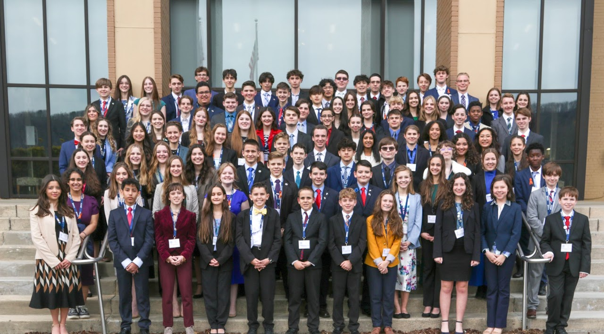
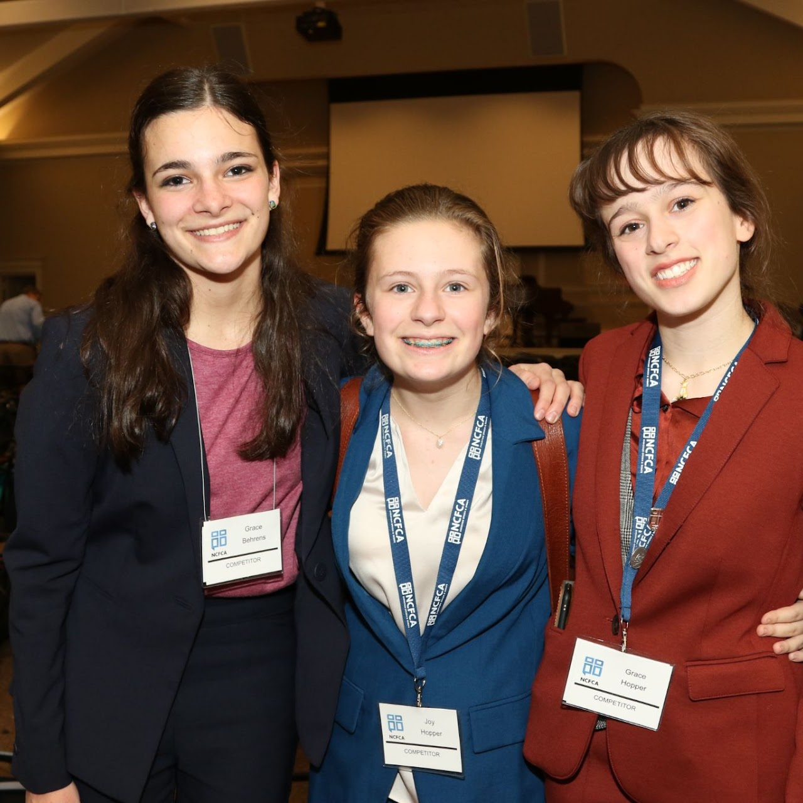
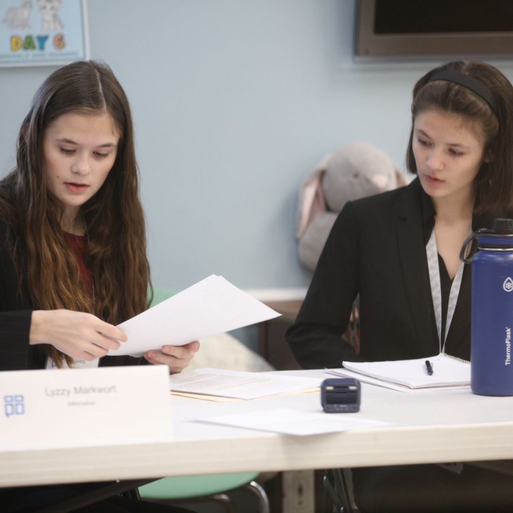
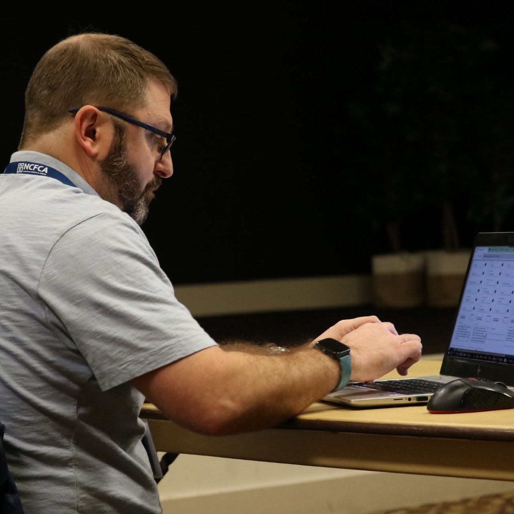
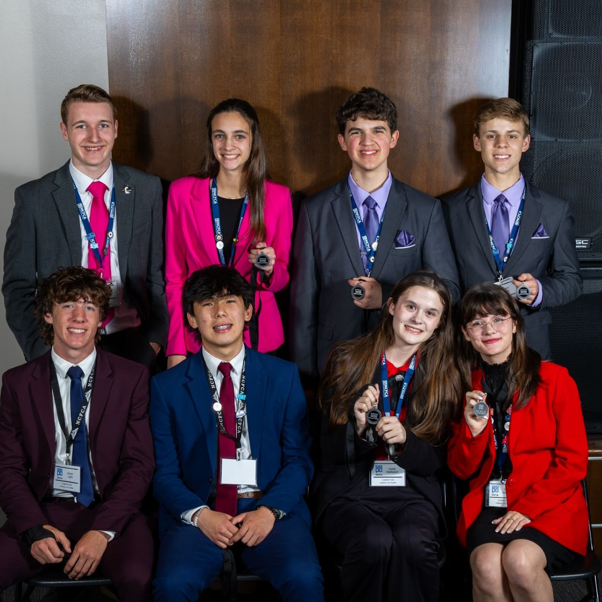

Make Waves.
Make Your Case.
A student speech & debate club in St. Johns County built on critical thinking, communication, truth, grace, and collaboration.
About Us
The North Florida Wavemakers is a board-run, parent-led speech and debate club affiliated with NCFCA (National Christian Forensics and Communication Association). We help students develop the skills to think clearly, speak confidently, and articulate a Biblical worldview with grace and conviction.
Participants must align with an evangelical statement of faith, the Nicene Creed, and NCFCA position statements. This is an active, involved community — not a drop-off program. Parent participation is essential to how the club runs.
The majority of our students are homeschooled. Depending on the effort a student puts in, participation in Wavemakers can count toward 1–2 high school credits.

Critical Thinking
Students learn to research, reason, and construct compelling arguments on complex topics.
Communication
From persuasive speeches to cross-examination, every format sharpens how students express ideas.

Community
A collaborative, family-centered environment where students and parents grow together.
Programs
Students may enroll in speech, debate, or both. Fair warning: most who start with one end up wanting both before the year is out.
Competitive Speech
Students prepare and deliver speeches across a variety of NCFCA categories — from platform and persuasive speeches to interpretive and impromptu events.

Team Policy Debate
Two-person teams research and argue both sides of a national policy resolution, developing deep research skills and the ability to think on their feet.

Parent Judging
Parents are integral to tournaments as trained judges. Judging is a meaningful way to contribute and deepen your own understanding of the activity.
Schedule & Meetings
Weekly Meetings
Meetings are held every Tuesday from September through May at Cross Creek Presbyterian Church in north St. Johns County, near Race Track Road off Route 13.
| Speech | 3:30 – 5:30 PM |
| Dinner Break | 5:30 – 6:00 PM |
| Debate | 6:00 – 9:00 PM |
First meeting of the 2025–26 year: Tuesday, September 9, 2025
2025–26 Tournaments & Camps
Our members compete in both Region 15 and Region 16 depending on preference.
- Jan 7–9, 2026 West Palm Beach Qualifier Palm Beach Atlantic University
- Mar 2–4, 2026 Winter Park Qualifier Gateway Church, Winter Park
- Mar 18–20, 2026 Panama City Qualifier St. Andrew Baptist Church
- May 7–9, 2026 R15 Championship Florida College, Temple Terrace
- Jan 15–17, 2026 Augusta, GA Qualifier First Presbyterian Church Augusta
- Mar 10–12, 2026 Due West, SC Qualifier Erskine College
- Apr 9–11, 2026 Woodstock, GA Qualifier Cherokee Christian Schools
- May 12–14, 2026 R16 Championship Anderson University, Anderson SC
Coach Vance and our club have worked out an exclusive camp catered to our club's specific needs — a unique opportunity we hope all debaters will make a priority.
- Competitors: $350 · Parents: $150
- $100 non-refundable deposit due upon registration; balance due by March 30, 2026
- No refunds after March 30, 2026
- All costs include instruction, food, and housing
- Jul–Aug 2026 NFWM Summer Speech Intensive with Coach Shannon Online · Thursdays Jul 16–Aug 27, 10–11:30am · $120 · Sign-up by July 7 · 6 sessions + 1 private coaching
- Aug 12–13, 2026 Monument LD Camp with Coach Vaughan First Baptist Church, Jacksonville · $160 · Register by Aug 3 · Monument members 20% off
- Sep 3–7, 2026 Coach Vance Labor Day Team Policy Camp Monroe, NC · $350/student, lodging & meals included · Optional Research Camp add-on Sep 7–9 (+$150)
Recent Achievements
Our students have earned outstanding results at both regional and national NCFCA competitions.
Our Students

Frequently Asked Questions
What are the faith requirements?
As an NCFCA club, participants are expected to align with an evangelical statement of faith, the Nicene Creed, and NCFCA position statements. Full details are available on the NCFCA website.
What are the age requirements?
Students must be between 12 and 18 years old to compete in NCFCA tournaments. Junior students ages 7–11 are welcome to attend club meetings when accompanied by an older sibling who is a member.
When and where do you meet?
We meet every Tuesday from 3:30–9:00 PM during the academic year (September through May) at Cross Creek Presbyterian Church in north St. Johns County, near Race Track Road off Route 13.
How involved do parents need to be?
Very involved — this is not a drop-off program. Parent participation is essential to how the club operates. Parents attend meetings, serve as judges at tournaments, and help run the organization. This shared investment is part of what makes the community strong.
Should my student do speech or debate?
Students may choose either or both. Both develop different but complementary skills. In practice, most students who start with one end up wanting to do both as the year goes on — so don't be surprised if that happens!
Do students need to be homeschooled?
No, but the majority of our students are homeschooled. The club's Tuesday schedule and parent-involvement expectations tend to be a natural fit for homeschool families, though students from other educational backgrounds are welcome.
Can this count for high school credit?
Yes — depending on the effort a student puts in, participation in Wavemakers can count toward 1–2 high school credits. Reach out to Rebekah for more details on how to document it for your records.
How much does it cost?
There are a few separate costs to budget for:
- Club membership — $150/person for the academic year.
- NCFCA family affiliation — $160/family (qualifying affiliation for the 2025–26 season). Details →
- Tournament registration — starts at $20/student entry plus per-event fees ($25–$40 for speech, $40–$45 for debate) at qualifying tournaments. Fees are higher at championship and national events. Full fee schedule →
- Monument Publishing membership — Team Policy debaters are required to have an active Monument Publishing membership, which provides textbooks, instructional videos, research resources, and a 20% discount on events ($99/year or $299 lifetime).
- Debate box — Team Policy debaters typically need a debate box for organizing evidence (~$100).
- Formal attire — competitors dress professionally for tournaments; budget for business formal clothing if your student doesn't already have it.
- Travel & lodging — you'll cover transportation and hotel costs for any tournaments you attend.
If your child receives a Personalized Education Program (PEP) Scholarship through Step Up For Students, we can provide an invoice for reimbursement of eligible expenses. Reach out to Rebekah with any questions about fees or payment.
How do I enroll or learn more?
Reach out to our contact below. We're happy to answer questions, share more about what a typical meeting looks like, and help you figure out if Wavemakers is a good fit for your family.
Get in Touch
Interested in joining, or have questions? Reach out to our club coordinator:
Register for 2025–26 Season →